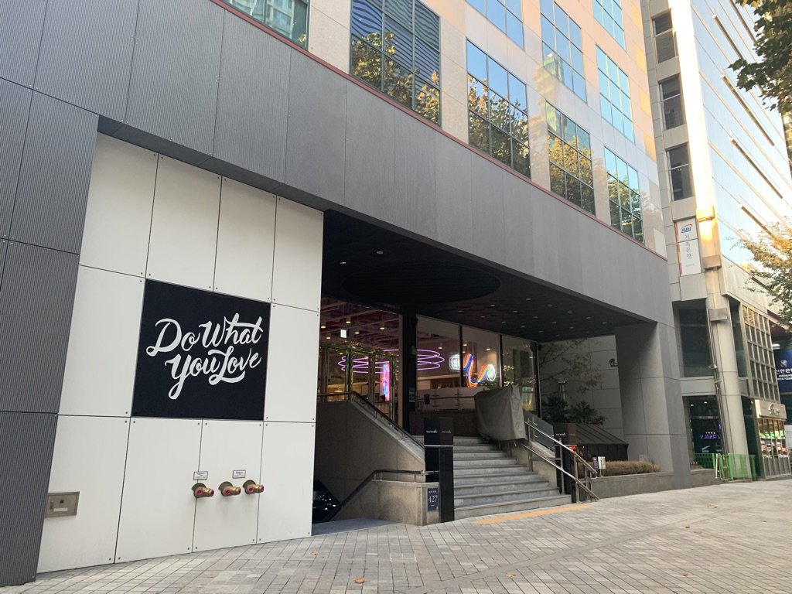

- Reason why want to change job?
- What's your goal?
- Explain what bootcamp is
What should you consider first for your goals?
선택에 앞서서, 내가 포기해야 될 것들과 포기하고 선택하면 현재 얻지 못하는 것들을 얻게 되는 것들을 정리해
보고자 한다.
한 가지 확실한 것은, 어디를 가든 생각없이 회사에서 주는 월급에만 의존했다가는 진짜 아픔이 닥쳤을 떼, 내 의지가
아닌 타인의 의지에 따라 살아가 피동적인 의지로 굳어지며 결국 자아는 찾지 못하는 안타까운 순간이
도래할 것이다.
포기해야 하는 것들
- 현재 받는 급여 : 지금 받는 금액만큼 못 받을 수 있다 라는 것을 인지한다.
- 경력 단절 : 그간 해왔던 5년 반 정도의 식품회사 경력. 다시 돌아간다는 생각은 절대 하면 안 된다.
- 안정적인 삶에 대한 포기 : 현실에 머물러 있는 삶이 길게 봤을 때, 과연 안정적일까?
- 음주, 술자리, 기타 취미 활동
- 지인 (친구, 회사동료 등) 들과의 관계 단절 : 몇 개월 정도만, 이것 빼고는 아무 것도 내 머릿속에 들일 여유
가 없다.
- 열심히 최선을 다해 매진해서 처음 취하게 될 구직활동이나 시스템 구축에 대한 불확실성.
- 늦잠, 게으름, 꾸준한 자기계발에 대한 부족한 의지.
포기하고 선택하면 예상될 얻을 수 있는 것들(여기서는 절대 불가능한)
- 프로그래밍 기술 : 식품지식에 비해 훨씬 더 광범위 하고 전 세계적으로 필요한 인력이다.
- WEB, APP 개발 수익 : 스스로 1인 기업이 되어 부의 추월차선을 달릴 기회가 제공된다.
- 디지털 노마드 : 시공간의 제약 없이 전 세계를 누비면서 창의적인 사고로 무장한 프로그래머가 될 수 있다.
- 가치 제공 : 다른 수많은 사람들에게 가치를 제공하고 궁극적으로는 나 스스로를 위해 스스로, 자발적으로,
주도적으로 살아가는 사람이 된다.
- 부의 추월차선 : 근로소득과는 비교도 할 수 없는 정도의 큰 자산의 축적.
참고 웹페이지 : 부의 추월차선의 저자 엠제이 드마코가 운영하는 홈페이지

왜? 이 길을 가려고 하는가? 어떤 시스템을 만들고 싶은가?